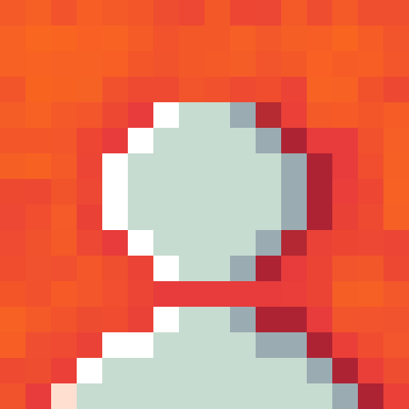
Komodo
Low-Poly 3D Modeler & Texturer
I create blocky pixel art models focused on realism. Every vertex is placed with purpose, every texture is hand-crafted to achieve a perfect balance between retro aesthetics and grounded, realistic lighting.
View My WorkPrevious Work
Brutalist Building
An imposing brutalist structure showcasing raw concrete textures and stark geometric forms. The pixelated aesthetic perfectly captures the monumental feel of brutalist architecture.
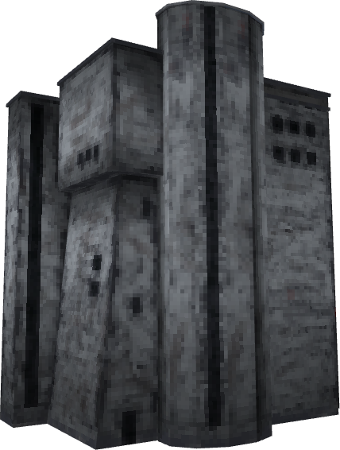
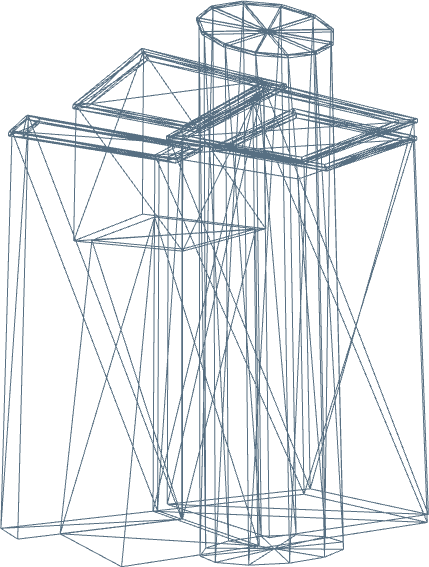
Banana
A simple yet appealing low-poly banana. The pixelated texturing highlights its classic shape and subtle color variations, bringing this everyday fruit to life.
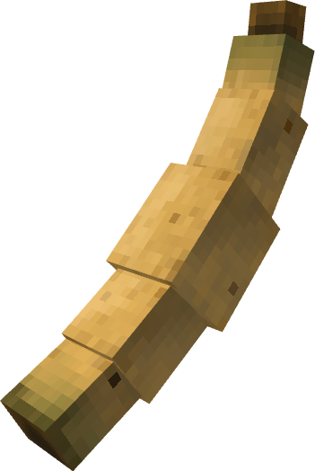
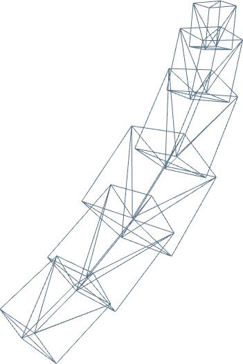
Battle Sword
A mighty battle sword crafted for a warrior. The intricate pixelated texturing perfectly emphasizes the sharp blade and sturdy hilt.
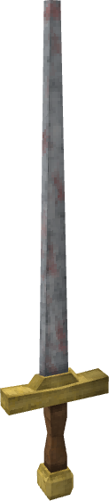
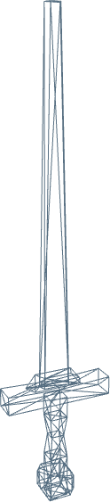
Tree
A lush, blocky tree that blends beautifully into any low-poly environment. The pixel texture brings life and foliage detail to its form.
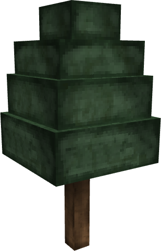
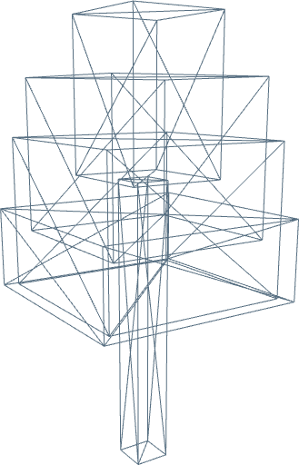
Ancient Castle
A majestic ancient castle built with sturdy stone blocks. The pixel texturing captures the worn battlements and historic grandeur of this low-poly fortress.
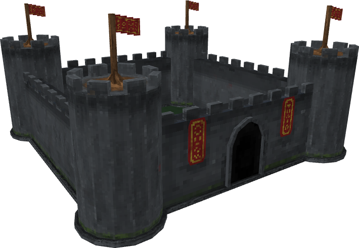
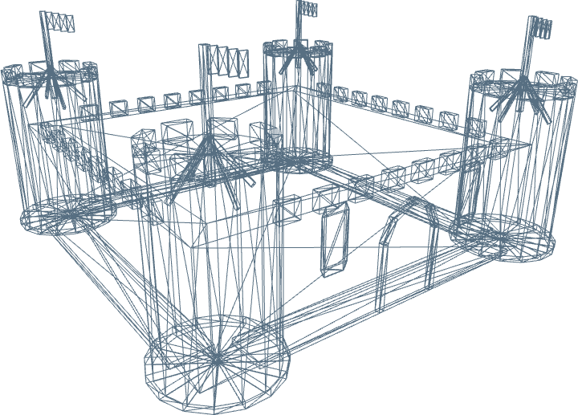
Medieval House
A beautifully crafted medieval house. The blocky architecture paired with detailed pixel textures brings this cozy retro dwelling to life.
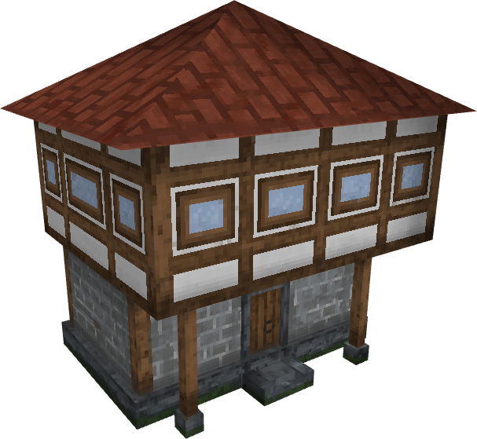
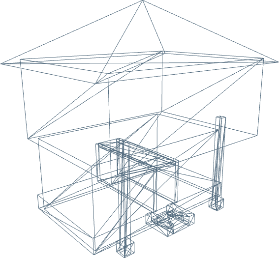
Medieval Banner
A battle-worn medieval banner. The pixelated texture captures the torn fabric and heraldry beautifully.
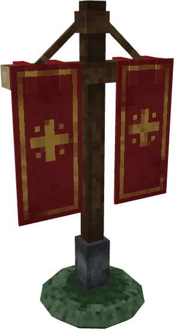
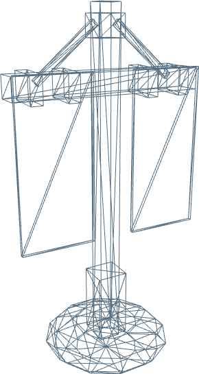
Snowman
A classic winter snowman brought to life in blocky form. The pixelated snow textures give it a charming and nostalgic appearance while maintaining low-poly realism.
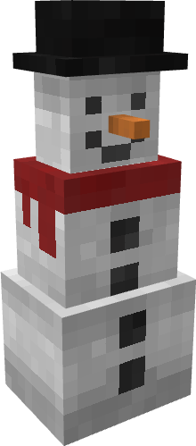
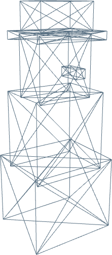
The Bomb
A classic cartoonish explosive device, textured with grimy details for a realistic feel despite its low-poly pixel nature.
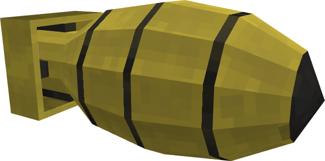
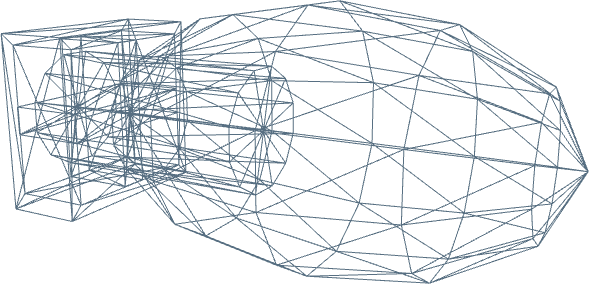
Treasure Chest
A wooden chest with rusted metal bindings. The pixelated wood grain adds immense character and realism to the low-topology structure.
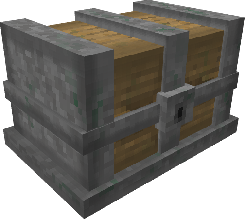
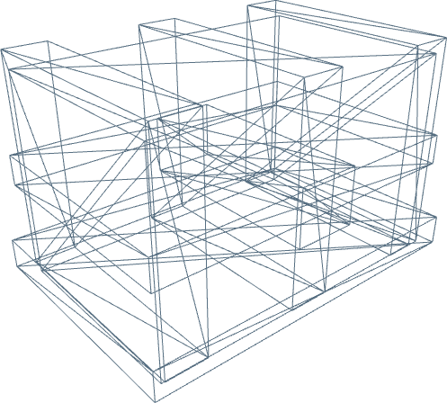
Eggs
A simple yet organic shape. Texturing plays a huge role in giving them a realistic shell-like appearance despite the blocky aesthetic.
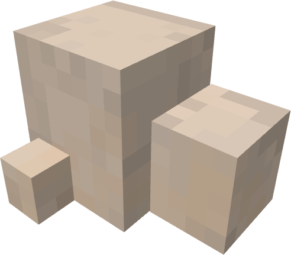
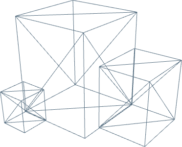
Grenade
Military-grade high-explosive. The specular highlights baked into the pixel texture sell the metallic material properties remarkably well.
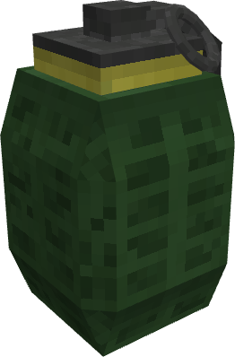
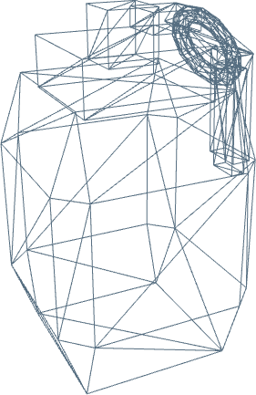
Katana
A sleek, deadly weapon with a traditionally wrapped hilt. Low topology maintains performance while the texture adds intricate depth.
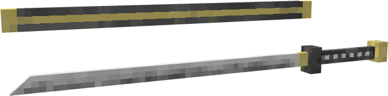
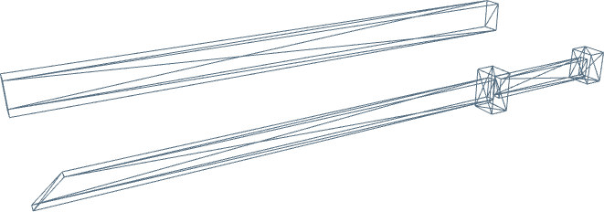
Medieval Sign
An ancient sign crafted from weathered wood and stone. The pixelated texture captures the age and mossy decay perfectly in low poly form.
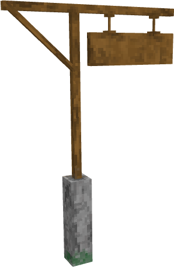
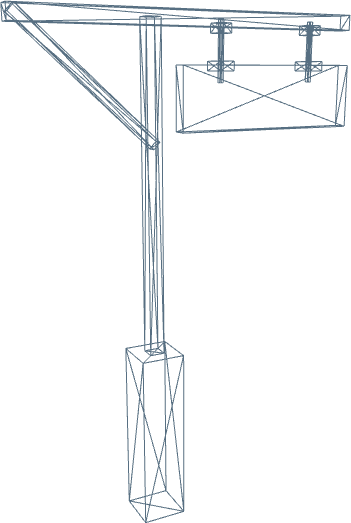
Trash Can
A dented, heavily used industrial trash can. The shading baked into the low-res texture gives it an incredibly realistic bulk.
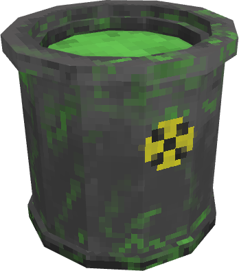
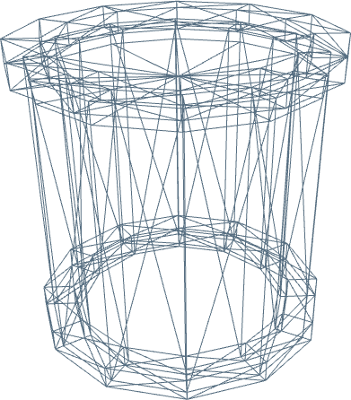
Color Palette
The Brutal 54 color palette. This restricted set of raw, earthy tones is what gives my pixel textures their signature realistic yet retro feel.